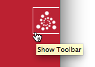
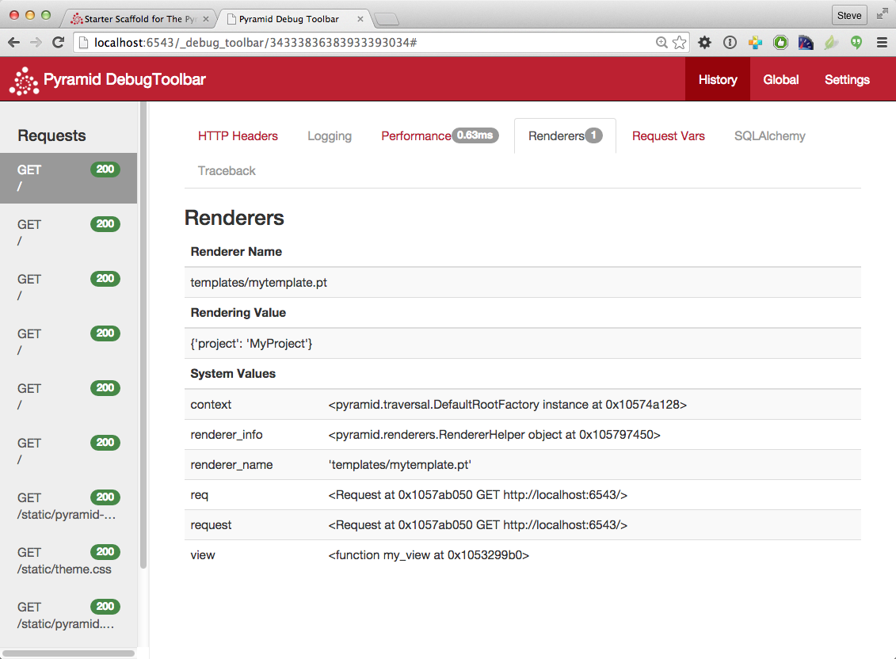

Creating a Pyramid Project¶
As we saw in Creating Your First Pyramid Application, it's possible to create a Pyramid application completely manually. However, it's usually more convenient to use a cookiecutter to generate a basic Pyramid project.
A project is a directory that contains at least one Python package. You'll use a cookiecutter to create a project, and you'll create your application logic within a package that lives inside the project. Even if your application is extremely simple, it is useful to place code that drives the application within a package, because (1) a package is more easily extended with new code, and (2) an application that lives inside a package can also be distributed more easily than one which does not live within a package.
The Pylons Project provides several Pyramid cookiecutters that you can use to generate a project. Each cookiecutter makes different configuration assumptions about what type of application you're trying to construct.
These cookiecutters are rendered using the cookiecutter command that you may install.
参考
See also Cookiecutter Installation.
Pyramid cookiecutters¶
Pyramid cookiecutters released under the Pylons Project differ from each other on a number of axes:
- the persistence mechanism they offer (no persistence mechanism, SQLAlchemy with SQLite, or ZODB)
- the mechanism they use to map URLs to code (URL dispatch or traversal)
- templating libraries (Jinja2, Chameleon, or Mako)
These cookiecutters include:
pyramid-cookiecutter-starter- URL dispatch for routing and either Jinja2, Chameleon, or Mako for templating
pyramid-cookiecutter-alchemy- SQLite for persistent storage, SQLAlchemy for an ORM, URL dispatch for routing, and Jinja2 for templating.
pyramid-cookiecutter-zodb- ZODB for persistent storage, traversal for routing, and Chameleon for templating
Creating the Project¶
In Installing Pyramid, you created a virtual Python environment via the
venv command. We called the virtual environment directory
env and set an environment variable VENV to its path.
We assume that you previously installed cookiecutter, following its installation instructions.
We'll choose pyramid-cookiecutter-starter to start the project. When we invoke cookiecutter, it will create a directory that represents our project.
We assume our current working directory is the value of VENV.
On all platforms, generate a project using cookiecutter.
$ cookiecutter gh:Pylons/pyramid-cookiecutter-starter --checkout 1.9-branch
If prompted for the first item, accept the default yes by hitting return.
You've cloned ~/.cookiecutters/pyramid-cookiecutter-starter before.
Is it okay to delete and re-clone it? [yes]: yes
project_name [Pyramid Scaffold]: myproject
repo_name [myproject]: myproject
Select template_language:
1 - jinja2
2 - chameleon
3 - mako
Choose from 1, 2, 3 [1]: 1
We then run through the following commands.
On UNIX:
# Reset our environment variable for a new virtual environment.
$ export VENV=~/env/myproject/env
# Change directory into your newly created project.
$ cd myproject
# Create a new virtual environment...
$ python3 -m venv $VENV
# ...where we upgrade packaging tools.
$ env/bin/pip install --upgrade pip setuptools
Or on Windows:
# Reset our environment variable for a new virtual environment.
c:\> set VENV=c:\env\myproject\env
# Change directory into your newly created project.
c:\> cd myproject
# Create a new virtual environment...
c:\myproject> python -m venv %VENV%
# ...where we upgrade packaging tools.
c:\myproject> %VENV%\Scripts\pip install --upgrade pip setuptools
As a result of invoking the cookiecutter command, a directory named
myproject is created. That directory is a project directory. The
setup.py file in that directory can be used to distribute your application,
or install your application for deployment or development.
An .ini file named development.ini will be created in the project
directory. You will use this .ini file to configure a server, to run your
application, and to debug your application. It contains configuration that
enables an interactive debugger and settings optimized for development.
Another .ini file named production.ini will also be created in the
project directory. It contains configuration that disables any interactive
debugger (to prevent inappropriate access and disclosure), and turns off a
number of debugging settings. You can use this file to put your application
into production.
The myproject project directory contains an additional subdirectory named
myproject (note the case difference) representing a Python package
which holds very simple Pyramid sample code. This is where you'll edit
your application's Python code and templates.
We created this project in a directory next to its virtual environment directory.
However, note that this is not mandatory. The project directory can go more or
less anywhere on your filesystem. You don't need to put it in a special "web
server" directory. You could put it within a virtual environment
directory. The author uses Linux mainly, and tends to put project directories
which he creates within his ~/projects directory. On Windows, it's a good
idea to put project directories within a directory that contains no space
characters, so it's wise to avoid a path that contains, i.e., My
Documents. As a result, the author, when he uses Windows, just puts his
projects in C:\projects.
警告
You'll need to avoid using cookiecutter to create a project with the same
name as a Python standard library component. In particular, this means you
should avoid using the names site or test, both of which conflict
with Python standard library packages. You should also avoid using the name
pyramid, which will conflict with Pyramid itself.
Installing your Newly Created Project for Development¶
To install a newly created project for development, you should cd to the
newly created project directory and use the Python interpreter from the
virtual environment you created during Installing Pyramid to
invoke the command pip install -e ., which installs the project in
development mode (-e is for "editable") into the current directory (.).
The file named setup.py will be in the root of the cookiecutter-generated
project directory. The python you're invoking should be the one that lives
in the bin (or Scripts on Windows) directory of your virtual Python
environment. Your terminal's current working directory must be the newly
created project directory.
On UNIX:
$ $VENV/bin/pip install -e .
Or on Windows:
c:\env\myproject> %VENV%\Scripts\pip install -e .
Elided output from a run of this command on UNIX is shown below:
Running setup.py develop for myproject
Successfully installed Jinja2-2.8 Mako-1.0.6 MarkupSafe-0.23 \
PasteDeploy-1.5.2 Pygments-2.1.3 WebOb-1.7.0 myproject pyramid-1.7.3 \
pyramid-debugtoolbar-3.0.5 pyramid-jinja2-2.7 pyramid-mako-1.0.2 \
repoze.lru-0.6 translationstring-1.3 venusian-1.0 waitress-1.0.1 \
zope.deprecation-4.2.0 zope.interface-4.3.3
This will install a distribution representing your project into the
virtual environment interpreter's library set so it can be found by import
statements and by other console scripts such as pserve, pshell,
proutes, and pviews.
Running the Tests for Your Application¶
To run unit tests for your application, you must first install the testing dependencies.
On UNIX:
$ $VENV/bin/pip install -e ".[testing]"
On Windows:
c:\env\myproject> %VENV%\Scripts\pip install -e ".[testing]"
Once the testing requirements are installed, then you can run the tests using
the py.test command that was just installed in the bin directory of
your virtual environment.
On UNIX:
$ $VENV/bin/py.test -q
On Windows:
c:\env\myproject> %VENV%\Scripts\py.test -q
Here's sample output from a test run on UNIX:
$ $VENV/bin/py.test -q
..
2 passed in 0.47 seconds
The tests themselves are found in the tests.py module in your cookiecutter-generated project. Within a project generated by the pyramid-cookiecutter-starter cookiecutter, only two sample tests exist.
注釈
The -q option is passed to the py.test command to limit the output
to a stream of dots. If you don't pass -q, you'll see verbose test
result output (which normally isn't very useful).
Alternatively, if you'd like to see test coverage, pass the --cov option
to py.test:
$ $VENV/bin/py.test --cov -q
Cookiecutters include configuration defaults for py.test and test coverage.
These configuration files are pytest.ini and .coveragerc, located at
the root of your package. Without these defaults, we would need to specify the
path to the module on which we want to run tests and coverage.
$ $VENV/bin/py.test --cov=myproject myproject/tests.py -q
参考
See py.test's documentation for Usage and Invocations or invoke
py.test -h to see its full set of options.
Running the Project Application¶
参考
See also the output of pserve --help.
Once a project is installed for development, you can run the application it
represents using the pserve command against the generated configuration
file. In our case, this file is named development.ini.
On UNIX:
$ $VENV/bin/pserve development.ini
On Windows:
c:\env\myproject> %VENV%\Scripts\pserve development.ini
Here's sample output from a run of pserve on UNIX:
$ $VENV/bin/pserve development.ini
Starting server in PID 77171.
Serving on http://localhost:6543
Serving on http://localhost:6543
Access is restricted such that only a browser running on the same machine as
Pyramid will be able to access your Pyramid application. However, if you want
to open access to other machines on the same network, then edit the
development.ini file, and replace the listen value in the
[server:main] section, changing it from localhost:6543 to *:6543
(this is equivalent to 0.0.0.0:6543 [::]:6543). For example:
[server:main]
use = egg:waitress#main
listen = *:6543
Now when you use pserve to start the application, it will respond to
requests on all IP addresses possessed by your system, not just requests to
localhost. This is what the 0.0.0.0 in
serving on http://0.0.0.0:6543 means. The server will respond to requests
made to 127.0.0.1 and on any external IP address. For example, your system
might be configured to have an external IP address 192.168.1.50. If that's
the case, if you use a browser running on the same system as Pyramid, it will
be able to access the application via http://127.0.0.1:6543/ as well as via
http://192.168.1.50:6543/. However, other people on other computers on
the same network will also be able to visit your Pyramid application in their
browser by visiting http://192.168.1.50:6543/. The same holds true if you use
IPv6. [::] means the same as 0.0.0.0 but for IPv6 protocol.
You can change the port on which the server runs on by changing the same
portion of the development.ini file. For example, you can change the
listen = localhost:6543 line in the development.ini file's [server:main]
section to listen = localhost:8080 to run the server on port 8080 instead of port 6543.
You can shut down a server started this way by pressing Ctrl-C (or
Ctrl-Break on Windows).
The default server used to run your Pyramid application when a project is
created from a cookiecutter is named Waitress. This server is what prints
the Serving on... line when you run pserve. It's a good idea to use
this server during development because it's very simple. It can also be used
for light production. Setting your application up under a different server is
not advised until you've done some development work under the default server,
particularly if you're not yet experienced with Python web development. Python
web server setup can be complex, and you should get some confidence that your
application works in a default environment before trying to optimize it or make
it "more like production". It's awfully easy to get sidetracked trying to set
up a non-default server for hours without actually starting to do any
development. One of the nice things about Python web servers is that they're
largely interchangeable, so if your application works under the default server,
it will almost certainly work under any other server in production if you
eventually choose to use a different one. Don't worry about it right now.
For more detailed information about the startup process, see Startup. For more information about environment variables and configuration file settings that influence startup and runtime behavior, see Environment Variables and .ini File Settings.
Reloading Code¶
During development, it's often useful to run pserve using its --reload
option. When --reload is passed to pserve, changes to any Python
module your project uses will cause the server to restart. This typically
makes development easier, as changes to Python code made within a
Pyramid application is not put into effect until the server restarts.
For example, on UNIX:
$ $VENV/bin/pserve development.ini --reload
Starting subprocess with file monitor
Starting server in PID 16601.
Serving on http://localhost:6543
Serving on http://localhost:6543
Now if you make a change to any of your project's .py files or .ini
files, you'll see the server restart automatically:
development.ini changed; reloading...
-------------------- Restarting --------------------
Starting server in PID 16602.
Serving on http://localhost:6543
Serving on http://localhost:6543
Changes to template files (such as .pt or .mak files) won't cause the
server to restart. Changes to template files don't require a server restart as
long as the pyramid.reload_templates setting in the development.ini
file is true. Changes made to template files when this setting is true
will take effect immediately without a server restart.
Viewing the Application¶
Once your application is running via pserve, you may visit
http://localhost:6543/ in your browser. You will see something in your
browser like what is displayed in the following image:
This is the page shown by default when you visit an unmodified cookiecutter
generated pyramid-cookiecutter-starter application in a browser.
The Debug Toolbar¶
If you click on the Pyramid logo at the top right of the page, a new target window will open to present a debug toolbar that provides various niceties while you're developing. This logo will float above every HTML page served by Pyramid while you develop an application, and allows you to show the toolbar as necessary.
If you don't see the Pyramid logo on the top right of the page, it means you're
browsing from a system that does not have debugging access. By default, for
security reasons, only a browser originating from localhost (127.0.0.1)
can see the debug toolbar. To allow your browser on a remote system to access
the server, add a line within the [app:main] section of the
development.ini file in the form debugtoolbar.hosts = X .X.X.X. For
example, if your Pyramid application is running on a remote system, and you're
browsing from a host with the IP address 192.168.1.1, you'd add something
like this to enable the toolbar when your system contacts Pyramid:
[app:main]
# .. other settings ...
debugtoolbar.hosts = 192.168.1.1
For more information about what the debug toolbar allows you to do, see the documentation for pyramid_debugtoolbar.
The debug toolbar will not be shown (and all debugging will be turned off) when
you use the production.ini file instead of the development.ini ini file
to run the application.
You can also turn the debug toolbar off by editing development.ini and
commenting out a line. For example, instead of:
1 2 3 4 | [app:main]
# ... elided configuration
pyramid.includes =
pyramid_debugtoolbar
|
Put a hash mark at the beginning of the pyramid_debugtoolbar line:
1 2 3 4 | [app:main]
# ... elided configuration
pyramid.includes =
# pyramid_debugtoolbar
|
Then restart the application to see that the toolbar has been turned off.
Note that if you comment out the pyramid_debugtoolbar line, the #
must be in the first column. If you put it anywhere else, and then attempt
to restart the application, you'll receive an error that ends something like
this:
ImportError: No module named #pyramid_debugtoolbar
The Project Structure¶
The pyramid-cookiecutter-starter cookiecutter generated a project (named myproject),
which contains a Python package. The package is also named
myproject; the cookiecutter generates a project which
contains a package that shares its name.
All Pyramid cookiecutter-generated projects share a similar structure.
The myproject project we've generated has the following directory structure:
myproject/
├── .coveragerc
├── CHANGES.txt
├── MANIFEST.in
├── myproject
│ ├── __init__.py
│ ├── static
│ │ ├── pyramid-16x16.png
│ │ ├── pyramid.png
│ │ └── theme.css
│ ├── templates
│ │ ├── layout.jinja2
│ │ └── mytemplate.jinja2
│ ├── tests.py
│ └── views.py
├── README.txt
├── development.ini
├── production.ini
├── pytest.ini
└── setup.py
The myproject Project¶
The myproject project directory is the distribution and deployment
wrapper for your application. It contains both the myproject
package representing your application as well as files used to
describe, run, and test your application.
.coveragercconfigures coverage when running tests.CHANGES.txtdescribes the changes you've made to the application. It is conventionally written in reStructuredText format.MANIFEST.inis a distutils "manifest" file, naming which files should be included in a source distribution of the package whenpython setup.py sdistis run.README.txtdescribes the application in general. It is conventionally written in reStructuredText format.development.iniis a PasteDeploy configuration file that can be used to execute your application during development.production.iniis a PasteDeploy configuration file that can be used to execute your application in a production configuration.pytest.iniis a configuration file for running tests.setup.pyis the file you'll use to test and distribute your application. It is a standard setuptoolssetup.pyfile.
development.ini¶
The development.ini file is a PasteDeploy configuration file. Its
purpose is to specify an application to run when you invoke pserve, as well
as the deployment settings provided to that application.
The generated development.ini file looks like so:
1 2 3 4 5 6 7 8 9 10 11 12 13 14 15 16 17 18 19 20 21 22 23 24 25 26 27 28 29 30 31 32 33 34 35 36 37 38 39 40 41 42 43 44 45 46 47 48 49 50 51 52 53 54 55 56 57 58 59 | ###
# app configuration
# https://docs.pylonsproject.org/projects/pyramid/en/latest/narr/environment.html
###
[app:main]
use = egg:myproject
pyramid.reload_templates = true
pyramid.debug_authorization = false
pyramid.debug_notfound = false
pyramid.debug_routematch = false
pyramid.default_locale_name = en
pyramid.includes =
pyramid_debugtoolbar
# By default, the toolbar only appears for clients from IP addresses
# '127.0.0.1' and '::1'.
# debugtoolbar.hosts = 127.0.0.1 ::1
###
# wsgi server configuration
###
[server:main]
use = egg:waitress#main
listen = localhost:6543
###
# logging configuration
# https://docs.pylonsproject.org/projects/pyramid/en/latest/narr/logging.html
###
[loggers]
keys = root, myproject
[handlers]
keys = console
[formatters]
keys = generic
[logger_root]
level = INFO
handlers = console
[logger_myproject]
level = DEBUG
handlers =
qualname = myproject
[handler_console]
class = StreamHandler
args = (sys.stderr,)
level = NOTSET
formatter = generic
[formatter_generic]
format = %(asctime)s %(levelname)-5.5s [%(name)s:%(lineno)s][%(threadName)s] %(message)s
|
This file contains several sections including [app:main],
[server:main], and several other sections related to logging configuration.
The [app:main] section represents configuration for your Pyramid
application. The use setting is the only setting required to be present in
the [app:main] section. Its default value, egg:myproject, indicates
that our myproject project contains the application that should be served.
Other settings added to this section are passed as keyword arguments to the
function named main in our package's __init__.py module. You can
provide startup-time configuration parameters to your application by adding
more settings to this section.
参考
See Entry Points and PasteDeploy .ini Files for more information about the
meaning of the use = egg:myproject value in this section.
The pyramid.reload_templates setting in the [app:main] section is a
Pyramid-specific setting which is passed into the framework. If it
exists, and its value is true, supported template changes will not require
an application restart to be detected. See Automatically Reloading Templates for
more information.
警告
The pyramid.reload_templates option should be turned off for
production applications, as template rendering is slowed when it is turned
on.
The pyramid.includes setting in the [app:main] section tells Pyramid to
"include" configuration from another package. In this case, the line
pyramid.includes = pyramid_debugtoolbar tells Pyramid to include
configuration from the pyramid_debugtoolbar package. This turns on a
debugging panel in development mode which can be opened by clicking on the
Pyramid logo on the top right of the screen. Including the debug
toolbar will also make it possible to interactively debug exceptions when an
error occurs.
Various other settings may exist in this section having to do with debugging or influencing runtime behavior of a Pyramid application. See Environment Variables and .ini File Settings for more information about these settings.
The name main in [app:main] signifies that this is the default
application run by pserve when it is invoked against this configuration
file. The name main is a convention used by PasteDeploy signifying that it
is the default application.
The [server:main] section of the configuration file configures a WSGI
server which listens on TCP port 6543. It is configured to listen on localhost
only (127.0.0.1).
The sections after # logging configuration represent Python's standard
library logging module configuration for your application. These
sections are passed to the logging module's config file configuration engine when the
pserve or pshell commands are executed. The default configuration
sends application logging output to the standard error output of your terminal.
For more information about logging configuration, see Logging.
See the PasteDeploy documentation for more information about other
types of things you can put into this .ini file, such as other
applications, middleware, and alternate WSGI server
implementations.
production.ini¶
The production.ini file is a PasteDeploy configuration file with a
purpose much like that of development.ini. However, it disables the debug
toolbar, and filters all log messages except those above the WARN level. It
also turns off template development options such that templates are not
automatically reloaded when changed, and turns off all debugging options. This
file is appropriate to use instead of development.ini when you put your
application into production.
It's important to use production.ini (and not development.ini) to
benchmark your application and put it into production. development.ini
configures your system with a debug toolbar that helps development, but the
inclusion of this toolbar slows down page rendering times by over an order of
magnitude. The debug toolbar is also a potential security risk if you have it
configured incorrectly.
MANIFEST.in¶
The MANIFEST.in file is a distutils configuration file which
specifies the non-Python files that should be included when a
distribution of your Pyramid project is created when you run python
setup.py sdist. Due to the information contained in the default
MANIFEST.in, an sdist of your Pyramid project will include .txt files,
.ini files, .rst files, graphics files, and template files, as well as
.py files. See
https://docs.python.org/2/distutils/sourcedist.html#the-manifest-in-template
for more information about the syntax and usage of MANIFEST.in.
Without the presence of a MANIFEST.in file or without checking your source
code into a version control repository, setup.py sdist places only Python
source files (files ending with a .py extension) into tarballs generated
by python setup.py sdist. This means, for example, if your project was not
checked into a setuptools-compatible source control system, and your project
directory didn't contain a MANIFEST.in file that told the sdist
machinery to include *.pt files, the myproject/templates/mytemplate.pt
file would not be included in the generated tarball.
Projects generated by Pyramid cookiecutters include a default MANIFEST.in file.
The MANIFEST.in file contains declarations which tell it to include files
like *.pt, *.css and *.js in the generated tarball. If you include
files with extensions other than the files named in the project's
MANIFEST.in and you don't make use of a setuptools-compatible version
control system, you'll need to edit the MANIFEST.in file and include the
statements necessary to include your new files. See
https://docs.python.org/2/distutils/sourcedist.html#principle for more
information about how to do this.
You can also delete MANIFEST.in from your project and rely on a setuptools
feature which simply causes all files checked into a version control system to
be put into the generated tarball. To allow this to happen, check all the
files that you'd like to be distributed along with your application's Python
files into Subversion. After you do this, when you rerun setup.py sdist,
all files checked into the version control system will be included in the
tarball. If you don't use Subversion, and instead use a different version
control system, you may need to install a setuptools add-on such as
setuptools-git or setuptools-hg for this behavior to work properly.
setup.py¶
The setup.py file is a setuptools setup file. It is meant to be
used to define requirements for installing dependencies for your package and
testing, as well as distributing your application.
注釈
setup.py is the de facto standard which Python developers use to
distribute their reusable code. You can read more about setup.py files
and their usage in the Python Packaging User Guide and Setuptools documentation.
Our generated setup.py looks like this:
1 2 3 4 5 6 7 8 9 10 11 12 13 14 15 16 17 18 19 20 21 22 23 24 25 26 27 28 29 30 31 32 33 34 35 36 37 38 39 40 41 42 43 44 45 46 47 48 49 50 51 52 | import os
from setuptools import setup, find_packages
here = os.path.abspath(os.path.dirname(__file__))
with open(os.path.join(here, 'README.txt')) as f:
README = f.read()
with open(os.path.join(here, 'CHANGES.txt')) as f:
CHANGES = f.read()
requires = [
'plaster_pastedeploy',
'pyramid',
'pyramid_jinja2',
'pyramid_debugtoolbar',
'waitress',
]
tests_require = [
'WebTest >= 1.3.1', # py3 compat
'pytest',
'pytest-cov',
]
setup(
name='myproject',
version='0.0',
description='MyProject',
long_description=README + '\n\n' + CHANGES,
classifiers=[
'Programming Language :: Python',
'Framework :: Pyramid',
'Topic :: Internet :: WWW/HTTP',
'Topic :: Internet :: WWW/HTTP :: WSGI :: Application',
],
author='',
author_email='',
url='',
keywords='web pyramid pylons',
packages=find_packages(),
include_package_data=True,
zip_safe=False,
extras_require={
'testing': tests_require,
},
install_requires=requires,
entry_points={
'paste.app_factory': [
'main = myproject:main',
],
},
)
|
The setup.py file calls the setuptools setup function, which does
various things depending on the arguments passed to pip on the command
line.
Within the arguments to this function call, information about your application is kept. While it's beyond the scope of this documentation to explain everything about setuptools setup files, we'll provide a whirlwind tour of what exists in this file in this section.
Your application's name can be any string; it is specified in the name
field. The version number is specified in the version value. A short
description is provided in the description field. The long_description
is conventionally the content of the README and CHANGES files appended
together. The classifiers field is a list of Trove classifiers describing your
application. author and author_email are text fields which probably
don't need any description. url is a field that should point at your
application project's URL (if any). packages=find_packages() causes all
packages within the project to be found when packaging the application.
include_package_data will include non-Python files when the application is
packaged if those files are checked into version control. zip_safe=False
indicates that this package is not safe to use as a zipped egg; instead it will
always unpack as a directory, which is more convenient. install_requires
indicates that this package depends on the pyramid package.
extras_require is a Python dictionary that defines what is required to be
installed for running tests. We examined entry_points in our discussion of
the development.ini file; this file defines the main entry point that
represents our project's application.
Usually you only need to think about the contents of the setup.py file when
distributing your application to other people, when adding Python package
dependencies, or when versioning your application for your own use. For fun,
you can try this command now:
$ $VENV/bin/python setup.py sdist
This will create a tarball of your application in a dist subdirectory named
myproject-0.0.tar.gz. You can send this tarball to other people who want
to install and use your application.
The myproject Package¶
The myproject package lives inside the myproject
project. It contains:
- An
__init__.pyfile signifies that this is a Python package. It also contains code that helps users run the application, including amainfunction which is used as a entry point for commands such aspserve,pshell,pviews, and others. - A
templatesdirectory, which contains Jinja2 (or other types of) templates. - A
tests.pymodule, which contains unit test code for the application. - A
views.pymodule, which contains view code for the application.
These are purely conventions established by the cookiecutter. Pyramid doesn't insist that you name things in any particular way. However, it's generally a good idea to follow Pyramid standards for naming, so that other Pyramid developers can get up to speed quickly on your code when you need help.
__init__.py¶
We need a small Python module that configures our application and which
advertises an entry point for use by our PasteDeploy .ini file.
This is the file named __init__.py. The presence of an __init__.py
also informs Python that the directory which contains it is a package.
1 2 3 4 5 6 7 8 9 10 11 12 | from pyramid.config import Configurator
def main(global_config, **settings):
""" This function returns a Pyramid WSGI application.
"""
config = Configurator(settings=settings)
config.include('pyramid_jinja2')
config.add_static_view('static', 'static', cache_max_age=3600)
config.add_route('home', '/')
config.scan()
return config.make_wsgi_app()
|
Line 1 imports the Configurator class from
pyramid.configthat we use later.Lines 4-12 define a function named
mainthat returns a Pyramid WSGI application. This function is meant to be called by the PasteDeploy framework as a result of runningpserve.Within this function, application configuration is performed.
Line 7 creates an instance of a Configurator.
Line 8 adds support for Jinja2 templating bindings, allowing us to specify renderers with the
.jinja2extension.Line 9 registers a static view, which will serve up the files from the
myproject:staticasset specification (thestaticdirectory of themyprojectpackage).Line 10 adds a route to the configuration. This route is later used by a view in the
viewsmodule.Line 11 calls
config.scan(), which picks up view registrations declared elsewhere in the package (in this case, in theviews.pymodule).Line 12 returns a WSGI application to the caller of the function (Pyramid's pserve).
views.py¶
Much of the heavy lifting in a Pyramid application is done by view callables. A view callable is the main tool of a Pyramid web application developer; it is a bit of code which accepts a request and which returns a response.
1 2 3 4 5 6 | from pyramid.view import view_config
@view_config(route_name='home', renderer='templates/mytemplate.jinja2')
def my_view(request):
return {'project': 'MyProject'}
|
Lines 4-6 define and register a view callable named my_view. The
function named my_view is decorated with a view_config decorator (which
is processed by the config.scan() line in our __init__.py). The
view_config decorator asserts that this view be found when a route
named home is matched. In our case, because our __init__.py maps the
route named home to the URL pattern /, this route will match when a
visitor visits the root URL. The view_config decorator also names a
renderer, which in this case is a template that will be used to render the
result of the view callable. This particular view declaration points at
templates/mytemplate.pt, which is an asset specification that
specifies the mytemplate.pt file within the templates directory of the
myproject package. The asset specification could have also been specified
as myproject:templates/mytemplate.pt; the leading package name and colon is
optional. The template file pointed to is a Jinja2 template
file (templates/my_template.jinja2).
This view callable function is handed a single piece of information: the
request. The request is an instance of the WebOb Request
class representing the browser's request to our server.
This view is configured to invoke a renderer on a template. The dictionary the view returns (on line 6) provides the value the renderer substitutes into the template when generating HTML. The renderer then returns the HTML in a response.
注釈
Dictionaries provide values to templates.
注釈
When the application is run with the cookiecutter's default
development.ini configuration, logging is set up to aid debugging. If an exception is raised,
uncaught tracebacks are displayed after the startup messages on the
console running the server. Also
print() statements may be inserted into the application for debugging to
send output to this console.
注釈
development.ini has a setting that controls how templates are
reloaded, pyramid.reload_templates.
- When set to
True(as in the cookiecutterdevelopment.ini), changed templates automatically reload without a server restart. This is convenient while developing, but slows template rendering speed. - When set to
False(the default value), changing templates requires a server restart to reload them. Production applications should usepyramid.reload_templates = False.
参考
See also Writing View Callables Which Use a Renderer for more information about how views, renderers, and templates relate and cooperate.
参考
Pyramid can also dynamically reload changed Python files. See also Reloading Code.
参考
See also the The Debug Toolbar, which provides interactive access to your application's internals and, should an exception occur, allows interactive access to traceback execution stack frames from the Python interpreter.
static¶
This directory contains static assets which support the layout.jinja2
template. It includes CSS and images.
templates/layout.jinja2¶
This is the base layout content. It contains a single marker for content block. Other templates inherit its content, providing layout for the web application. Its contents are too long to show here, but here is an excerpt:
34 35 36 37 38 | <div class="col-md-10">
{% block content %}
<p>No content</p>
{% endblock content %}
</div>
|
templates/mytemplate.jinja2¶
This is the content Jinja2 template that exists in the project. It is referenced by the call to @view_config as the renderer
of the my_view view callable in the views.py file. See
Writing View Callables Which Use a Renderer for more information about renderers. It inherits ("extends") the HTML provided by layout.jinja2, replacing the content block with its own content.
1 2 3 4 5 6 7 8 | {% extends "layout.jinja2" %}
{% block content %}
<div class="content">
<h1><span class="font-semi-bold">Pyramid</span> <span class="smaller">Starter project</span></h1>
<p class="lead">Welcome to <span class="font-normal">MyProject</span>, a Pyramid application generated by<br><span class="font-normal">Cookiecutter</span>.</p>
</div>
{% endblock content %}
|
Templates are accessed and used by view configurations and sometimes by view functions themselves. See Using Templates Directly and Templates Used as Renderers via Configuration.
tests.py¶
The tests.py module includes tests for your application.
1 2 3 4 5 6 7 8 9 10 11 12 13 14 15 16 17 18 19 20 21 22 23 24 25 26 27 28 29 | import unittest
from pyramid import testing
class ViewTests(unittest.TestCase):
def setUp(self):
self.config = testing.setUp()
def tearDown(self):
testing.tearDown()
def test_my_view(self):
from .views import my_view
request = testing.DummyRequest()
info = my_view(request)
self.assertEqual(info['project'], 'MyProject')
class FunctionalTests(unittest.TestCase):
def setUp(self):
from myproject import main
app = main({})
from webtest import TestApp
self.testapp = TestApp(app)
def test_root(self):
res = self.testapp.get('/', status=200)
self.assertTrue(b'Pyramid' in res.body)
|
This sample tests.py file has one unit test and one functional test defined
within it. These tests are executed when you run py.test -q. You may add
more tests here as you build your application. You are not required to write
tests to use Pyramid. This file is simply provided for convenience and
example.
See Unit, Integration, and Functional Testing for more information about writing Pyramid unit tests.
Modifying Package Structure¶
It is best practice for your application's code layout to not stray too much from accepted Pyramid cookiecutter defaults. If you refrain from changing things very much, other Pyramid coders will be able to more quickly understand your application. However, the code layout choices made for you by a cookiecutter are in no way magical or required. Despite the choices made for you by any cookiecutter, you can decide to lay your code out any way you see fit.
For example, the configuration method named
add_view() requires you to pass a
dotted Python name or a direct object reference as the class or
function to be used as a view. By default, the starter cookiecutter would have
you add view functions to the views.py module in your package. However, you
might be more comfortable creating a views directory, and adding a single
file for each view.
If your project package name was myproject and you wanted to arrange all
your views in a Python subpackage within the myproject package
named views instead of within a single views.py file, you might do the
following.
- Create a
viewsdirectory inside yourmyprojectpackage directory (the same directory which holdsviews.py). - Create a file within the new
viewsdirectory named__init__.py. (It can be empty. This just tells Python that theviewsdirectory is a package.) - Move the content from the existing
views.pyfile to a file inside the newviewsdirectory named, say,blog.py. Because thetemplatesdirectory remains in themyprojectpackage, the template asset specification values inblog.pymust now be fully qualified with the project's package name (myproject:templates/blog.pt).
You can then continue to add view callable functions to the blog.py module,
but you can also add other .py files which contain view callable functions
to the views directory. As long as you use the @view_config directive
to register views in conjunction with config.scan(), they will be picked up
automatically when the application is restarted.
Using the Interactive Shell¶
It is possible to use the pshell command to load a Python interpreter
prompt with a similar configuration as would be loaded if you were running your
Pyramid application via pserve. This can be a useful debugging tool. See
The Interactive Shell for more details.
What Is This pserve Thing¶
The code generated by a Pyramid cookiecutter assumes that you will be using
the pserve command to start your application while you do development.
pserve is a command that reads a PasteDeploy .ini file (e.g.,
development.ini), and configures a server to serve a Pyramid
application based on the data in the file.
pserve is by no means the only way to start up and serve a Pyramid
application. As we saw in Creating Your First Pyramid Application, pserve needn't be
invoked at all to run a Pyramid application. The use of pserve to
run a Pyramid application is purely conventional based on the output of
its cookiecutter. But we strongly recommend using pserve while developing
your application because many other convenience introspection commands (such as
pviews, prequest, proutes, and others) are also implemented in
terms of configuration availability of this .ini file format. It also
configures Pyramid logging and provides the --reload switch for convenient
restarting of the server when code changes.
Using an Alternate WSGI Server¶
Pyramid cookiecutters generate projects which use the Waitress WSGI server. Waitress is a server that is suited for development and light production usage. It's not the fastest nor the most featureful WSGI server. Instead, its main feature is that it works on all platforms that Pyramid needs to run on, making it a good choice as a default server from the perspective of Pyramid's developers.
Any WSGI server is capable of running a Pyramid application. But we suggest you stick with the default server for development, and that you wait to investigate other server options until you're ready to deploy your application to production. Unless for some reason you need to develop on a non-local system, investigating alternate server options is usually a distraction until you're ready to deploy. But we recommend developing using the default configuration on a local system that you have complete control over; it will provide the best development experience.
One popular production alternative to the default Waitress server is
mod_wsgi. You can use mod_wsgi to serve your Pyramid application
using the Apache web server rather than any "pure-Python" server like Waitress.
It is fast and featureful. See Running a Pyramid Application under mod_wsgi for details.
Another good production alternative is Green Unicorn (aka
gunicorn). It's faster than Waitress and slightly easier to configure than
mod_wsgi, although it depends, in its default configuration, on having a
buffering HTTP proxy in front of it. It does not, as of this writing, work on
Windows.
Automatically Reloading Your Code¶
During development, it can be really useful to automatically have the
webserver restart when you make changes. pserve has a --reload switch
to enable this. It uses the
hupper package
to enable this behavior. When your code crashes, hupper will wait for
another change or the SIGHUP signal before restarting again.
inotify support¶
By default hupper will poll the filesystem for changes to all Python
code. This can be pretty inefficient in larger projects. To be nicer to your
hard drive, you should install the
watchdog package in development.
hupper will automatically use watchdog to more efficiently poll the
filesystem.
Monitoring Custom Files¶
By default, pserve --reload will monitor all imported Python code
(everything in sys.modules) as well as the config file passed to
pserve (e.g., development.ini). You can instruct pserve to watch
other files for changes as well by defining a [pserve] section in your
configuration file. For example, let's say your application loads the
favicon.ico file at startup and stores it in memory to efficiently
serve it many times. When you change it, you want pserve to restart:
[pserve]
watch_files =
myproject/static/favicon.ico
Paths may be absolute or relative to the configuration file. They may also
be an asset specification. These paths are passed to hupper, which
has some basic support for globbing. Acceptable glob patterns depend on the
version of Python being used.